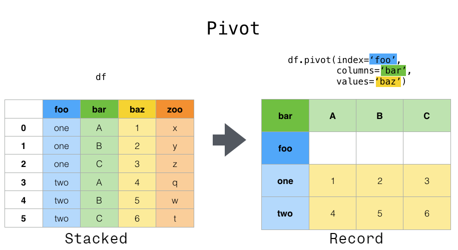

Pandas#
Pandas is a powerful Python library for data manipulation and analysis. It provides data structures and functions to efficiently work with structured data, such as tabular data and time series. Pandas introduces two primary data structures, namely Series and DataFrame, which allow for easy indexing, slicing, filtering, and transformation of data. With Pandas, you can handle missing data, perform statistical calculations, apply data reshaping operations, and visualize data. It also integrates well with other libraries, such as NumPy and Matplotlib, making it a popular choice for data analysis tasks, data cleaning, preprocessing, and exploratory data analysis (EDA).
import pandas as pd
Series#
Creation#
sr = pd.Series(data = [10, 20, 30], name = 'sum_10') # simple creation with name
sr
0 10
1 20
2 30
Name: sum_10, dtype: int64
sr2 = pd.Series(data = [10, 20, 30], # creation with indexes
index = ['a', 'b', 'c'])
sr2
a 10
b 20
c 30
dtype: int64
sr3 = pd.Series(data = {'a': 10, 'b': 20, 'c': 30}) # creation from dictionary
sr3
a 10
b 20
c 30
dtype: int64
name: returns the name of the series
rename: changes the name
dtype: returns the type of the elements in the series
index: returns the indexes of the series
to_numpy: access data underlying the array
print(sr.name)
print(sr.rename('sum'))
print(sr.dtype)
print(sr.index)
print(sr.to_numpy())
sum_10
0 10
1 20
2 30
Name: sum, dtype: int64
int64
RangeIndex(start=0, stop=3, step=1)
[10 20 30]
Access, Operations, Functions#
Just as Numpy’s arrays
Series of Strings Methods#
Method |
Paramethers |
Description |
|---|---|---|
|
others=None, sep=None |
Concatenates strings in the series with given separator |
|
pat*=None, n=-1 |
Splits strings in the series around given separator from the beginning |
|
pat*=None, n=-1 |
Splits strings in the series around given separator from the end |
|
i |
Extracts element from each component at specified position in the series |
|
sep |
Joins lists contained as elements in the series with passed delimiter |
|
sep*=’ |
‘ |
|
pat, regex*=True |
Returns boolean series if each string contains pattern/regex |
|
pat, repl, n=-1, regex*=True |
Replaces occurrences of pattern/regex with some other string or the return value of a callable given the occurrence |
Others as python-basics: str.capitalize, str.casefold, str.lower, str.upper, str.len, …
Dataframe#
Creation#
df = pd.DataFrame([[1, 2, 3], # simple dataframe creation (from lists)
[4, 5, 6],
[7, 8, 9]])
df = pd.DataFrame([[1, 2, 3], # creation with indexes and colunms names
[4, 5, 6],
[7, 8, 9]],
index = ['R1', 'R2', 'R3'],
columns = ['C1', 'C2', 'C3'])
Creation from a Support
Support |
Example |
|---|---|
Array |
|
Dictionary |
|
List |
|
List of Dictionaries |
|
Series |
|
Tuple |
|
Creation from File
File |
Function |
|---|---|
CSV |
|
Excel |
|
Html |
|
Json |
|
Text |
|
Access#
Indexing with
[]
df['C1'] # returns a series from a column
R1 1
R2 4
R3 7
Name: C1, dtype: int64
df[['C1']] # returns a dataframe from a column
# df[0:1] returns a dataframe from a row
| C1 | |
|---|---|
| R1 | 1 |
| R2 | 4 |
| R3 | 7 |
df[['C1', 'C2']] # returns a dataframe with multiple columns
# df[0:2] returns a dataframe with multiple rows
| C1 | C2 | |
|---|---|---|
| R1 | 1 | 2 |
| R2 | 4 | 5 |
| R3 | 7 | 8 |
Boolean indexing
Boolean indexing in Pandas is a technique where you filter rows from a DataFrame by using a series of boolean values. Each boolean value indicates whether a specific condition is met for its corresponding row. By applying this boolean series as an index to the DataFrame, you retrieve only the rows that fulfill the condition. It’s a convenient method for extracting subsets of data that adhere to specific logical requirements.
df[df['C1'] > 1]
| C1 | C2 | C3 | |
|---|---|---|---|
| R2 | 4 | 5 | 6 |
| R3 | 7 | 8 | 9 |
It returns an Object for single selection, Series for one row/column, otherwise DataFrame
locmethod
Using the loc function in Pandas involves selecting data from a DataFrame based on label-based indexing. You specify row and column labels to access specific data points. This method is particularly useful when you want to work with data using its meaningful labels rather than numeric positions. It provides a convenient way to extract data based on labels, enhancing readability and understanding.
df.loc[['R1', 'R2'], ['C1']]
| C1 | |
|---|---|
| R1 | 1 |
| R2 | 4 |
It returns an Object for single selection, Series for one row/column, otherwise DataFrame
ilocmethod
Using iloc in Pandas means selecting data from a DataFrame by specifying integer-based row and column indices. This approach lets you retrieve data using numerical positions, offering a precise way to extract information from specific locations within the DataFrame. It’s particularly useful for numeric-oriented data retrieval tasks.
df.iloc[[0, 1], [0]]
| C1 | |
|---|---|
| R1 | 1 |
| R2 | 4 |
It returns an Object for single selection, Series for one row/column, otherwise DataFrame
querymethod
The query function in Pandas allows you to filter a DataFrame by providing a string expression that represents a condition. This expression is evaluated to produce a boolean series that identifies rows matching the condition. This function simplifies the process of filtering data based on specific criteria, making the code more concise and readable. It’s a helpful tool for selecting rows that meet certain conditions in a more intuitive and SQL-like manner.
df.query('C1 > 1 & C2 == 5')
| C1 | C2 | C3 | |
|---|---|---|---|
| R2 | 4 | 5 | 6 |
It returns an Object for single selection, Series for one row/column, otherwise DataFrame
Inspection#
df = pd.read_csv('cycling_data.csv')
head: returns the firsts n rows (default = 5) of the dataframe
tail: returns the lasts n rows (default = 5) of the dataframe
shape: returns the shape of the dataframe
dtypes: returns the type of the elements in the dataframe
info: returns information about the dataframe itself, such as dtypes, memory usages and non-null values
describe: provides summary statistics of the values within a dataframe
Examples:
df.head(10) # shows the firsts 10 rows
| Date | Name | Type | Time | Distance | Comments | |
|---|---|---|---|---|---|---|
| 0 | 10 Sep 2019, 00:13:04 | Afternoon Ride | Ride | 2084 | 12.62 | Rain |
| 1 | 10 Sep 2019, 13:52:18 | Morning Ride | Ride | 2531 | 13.03 | rain |
| 2 | 11 Sep 2019, 00:23:50 | Afternoon Ride | Ride | 1863 | 12.52 | Wet road but nice weather |
| 3 | 11 Sep 2019, 14:06:19 | Morning Ride | Ride | 2192 | 12.84 | Stopped for photo of sunrise |
| 4 | 12 Sep 2019, 00:28:05 | Afternoon Ride | Ride | 1891 | 12.48 | Tired by the end of the week |
| 5 | 16 Sep 2019, 13:57:48 | Morning Ride | Ride | 2272 | 12.45 | Rested after the weekend! |
| 6 | 17 Sep 2019, 00:15:47 | Afternoon Ride | Ride | 1973 | 12.45 | Legs feeling strong! |
| 7 | 17 Sep 2019, 13:43:34 | Morning Ride | Ride | 2285 | 12.60 | Raining |
| 8 | 18 Sep 2019, 13:49:53 | Morning Ride | Ride | 2903 | 14.57 | Raining today |
| 9 | 18 Sep 2019, 00:15:52 | Afternoon Ride | Ride | 2101 | 12.48 | Pumped up tires |
df.tail(10) # shows the lasts 10 rows
| Date | Name | Type | Time | Distance | Comments | |
|---|---|---|---|---|---|---|
| 23 | 1 Oct 2019, 13:45:55 | Morning Ride | Ride | 2222 | 12.82 | Beautiful morning! Feeling fit |
| 24 | 2 Oct 2019, 00:13:09 | Afternoon Ride | Ride | 1756 | NaN | A little tired today but good weather |
| 25 | 2 Oct 2019, 13:46:06 | Morning Ride | Ride | 2134 | 13.06 | Bit tired today but good weather |
| 26 | 3 Oct 2019, 00:45:22 | Afternoon Ride | Ride | 1724 | 12.52 | Feeling good |
| 27 | 3 Oct 2019, 13:47:36 | Morning Ride | Ride | 2182 | 12.68 | Wet road |
| 28 | 4 Oct 2019, 01:08:08 | Afternoon Ride | Ride | 1870 | 12.63 | Very tired, riding into the wind |
| 29 | 9 Oct 2019, 13:55:40 | Morning Ride | Ride | 2149 | 12.70 | Really cold! But feeling good |
| 30 | 10 Oct 2019, 00:10:31 | Afternoon Ride | Ride | 1841 | 12.59 | Feeling good after a holiday break! |
| 31 | 10 Oct 2019, 13:47:14 | Morning Ride | Ride | 2463 | 12.79 | Stopped for photo of sunrise |
| 32 | 11 Oct 2019, 00:16:57 | Afternoon Ride | Ride | 1843 | 11.79 | Bike feeling tight, needs an oil and pump |
df.shape # shape[0] are rows, shape[1] are columns
(33, 6)
df.dtypes
Date object
Name object
Type object
Time int64
Distance float64
Comments object
dtype: object
df.info()
<class 'pandas.core.frame.DataFrame'>
RangeIndex: 33 entries, 0 to 32
Data columns (total 6 columns):
# Column Non-Null Count Dtype
--- ------ -------------- -----
0 Date 33 non-null object
1 Name 33 non-null object
2 Type 33 non-null object
3 Time 33 non-null int64
4 Distance 31 non-null float64
5 Comments 33 non-null object
dtypes: float64(1), int64(1), object(4)
memory usage: 1.7+ KB
df.describe()
# df.describe(include='all') include all the summaries
| Time | Distance | |
|---|---|---|
| count | 33.000000 | 31.000000 |
| mean | 3512.787879 | 12.667419 |
| std | 8003.309233 | 0.428618 |
| min | 1712.000000 | 11.790000 |
| 25% | 1863.000000 | 12.480000 |
| 50% | 2118.000000 | 12.620000 |
| 75% | 2285.000000 | 12.750000 |
| max | 48062.000000 | 14.570000 |
View vs Copy#
A view of a DataFrame is a representation that provides access to a subset of the original data. Changes made to the view will affect the original DataFrame, as they both share the same underlying data.
A copy of a DataFrame is an independent duplicate with identical data to the original at the time of copying. Modifications to a copy do not impact the original DataFrame, and vice versa.
df_copy = df.copy()
It is important to note that accessing the dataframe via [], Boolean indexing, or query generates a copy of the original dataframe, whereas the loc and iloc functions use a view. Consequently, it is necessary to use these two functions to modify values within the original dataset.
Operations#
Rename
df = df.rename(columns={'Date': 'Datetime', 'Comments': 'Notes'}) # rename columns
# df.rename(columns={'Date': 'Datetime', 'Comments': 'Notes'}, inplace=True) equivalent
df.head()
| Datetime | Name | Type | Time | Distance | Notes | |
|---|---|---|---|---|---|---|
| 0 | 10 Sep 2019, 00:13:04 | Afternoon Ride | Ride | 2084 | 12.62 | Rain |
| 1 | 10 Sep 2019, 13:52:18 | Morning Ride | Ride | 2531 | 13.03 | rain |
| 2 | 11 Sep 2019, 00:23:50 | Afternoon Ride | Ride | 1863 | 12.52 | Wet road but nice weather |
| 3 | 11 Sep 2019, 14:06:19 | Morning Ride | Ride | 2192 | 12.84 | Stopped for photo of sunrise |
| 4 | 12 Sep 2019, 00:28:05 | Afternoon Ride | Ride | 1891 | 12.48 | Tired by the end of the week |
df = df.rename(index={0: 'row_1', 2: 'row_3'}) # rename rows
# df.rename(index={0: 'row_1', 2: 'row_3'}, inplace=True) equivalent
df.head()
| Datetime | Name | Type | Time | Distance | Notes | |
|---|---|---|---|---|---|---|
| row_1 | 10 Sep 2019, 00:13:04 | Afternoon Ride | Ride | 2084 | 12.62 | Rain |
| 1 | 10 Sep 2019, 13:52:18 | Morning Ride | Ride | 2531 | 13.03 | rain |
| row_3 | 11 Sep 2019, 00:23:50 | Afternoon Ride | Ride | 1863 | 12.52 | Wet road but nice weather |
| 3 | 11 Sep 2019, 14:06:19 | Morning Ride | Ride | 2192 | 12.84 | Stopped for photo of sunrise |
| 4 | 12 Sep 2019, 00:28:05 | Afternoon Ride | Ride | 1891 | 12.48 | Tired by the end of the week |
df = df.set_index('Datetime')
df.head()
| Name | Type | Time | Distance | Notes | |
|---|---|---|---|---|---|
| Datetime | |||||
| 10 Sep 2019, 00:13:04 | Afternoon Ride | Ride | 2084 | 12.62 | Rain |
| 10 Sep 2019, 13:52:18 | Morning Ride | Ride | 2531 | 13.03 | rain |
| 11 Sep 2019, 00:23:50 | Afternoon Ride | Ride | 1863 | 12.52 | Wet road but nice weather |
| 11 Sep 2019, 14:06:19 | Morning Ride | Ride | 2192 | 12.84 | Stopped for photo of sunrise |
| 12 Sep 2019, 00:28:05 | Afternoon Ride | Ride | 1891 | 12.48 | Tired by the end of the week |
df = df.reset_index()
df.head()
| Datetime | Name | Type | Time | Distance | Notes | |
|---|---|---|---|---|---|---|
| 0 | 10 Sep 2019, 00:13:04 | Afternoon Ride | Ride | 2084 | 12.62 | Rain |
| 1 | 10 Sep 2019, 13:52:18 | Morning Ride | Ride | 2531 | 13.03 | rain |
| 2 | 11 Sep 2019, 00:23:50 | Afternoon Ride | Ride | 1863 | 12.52 | Wet road but nice weather |
| 3 | 11 Sep 2019, 14:06:19 | Morning Ride | Ride | 2192 | 12.84 | Stopped for photo of sunrise |
| 4 | 12 Sep 2019, 00:28:05 | Afternoon Ride | Ride | 1891 | 12.48 | Tired by the end of the week |
Add and Remove
This section only considers cases where only one row/column is to be added or deleted. The results can be easily generalized to the case of multiple rows or columns (see also the next section), for example, using Dataframes instead of Series.
Add Column
df['Avg Speed'] = df['Distance'] * 1000 / df['Time'] # direct method (using series)
# df['Avg Speed'] = pd.Series([6, 5, 6, ...]) example with explicit series
# Alternatives
# 1) df.loc[:, 'Avg Speed'] = df['Distance'] * 1000 / df['Time'] # loc
# 2) df.iloc[:, df.shape[1]] = df['Distance'] * 1000 / df['Time'] #iloc
# df.columns = [*df.columns[:-1], 'Avg Speed']
df.head()
| Datetime | Name | Type | Time | Distance | Notes | Avg Speed | |
|---|---|---|---|---|---|---|---|
| 0 | 10 Sep 2019, 00:13:04 | Afternoon Ride | Ride | 2084 | 12.62 | Rain | 6.055662 |
| 1 | 10 Sep 2019, 13:52:18 | Morning Ride | Ride | 2531 | 13.03 | rain | 5.148163 |
| 2 | 11 Sep 2019, 00:23:50 | Afternoon Ride | Ride | 1863 | 12.52 | Wet road but nice weather | 6.720344 |
| 3 | 11 Sep 2019, 14:06:19 | Morning Ride | Ride | 2192 | 12.84 | Stopped for photo of sunrise | 5.857664 |
| 4 | 12 Sep 2019, 00:28:05 | Afternoon Ride | Ride | 1891 | 12.48 | Tired by the end of the week | 6.599683 |
Remove Column
df = df.drop(columns=['Avg Speed'])
df.head()
| Datetime | Name | Type | Time | Distance | Notes | |
|---|---|---|---|---|---|---|
| 0 | 10 Sep 2019, 00:13:04 | Afternoon Ride | Ride | 2084 | 12.62 | Rain |
| 1 | 10 Sep 2019, 13:52:18 | Morning Ride | Ride | 2531 | 13.03 | rain |
| 2 | 11 Sep 2019, 00:23:50 | Afternoon Ride | Ride | 1863 | 12.52 | Wet road but nice weather |
| 3 | 11 Sep 2019, 14:06:19 | Morning Ride | Ride | 2192 | 12.84 | Stopped for photo of sunrise |
| 4 | 12 Sep 2019, 00:28:05 | Afternoon Ride | Ride | 1891 | 12.48 | Tired by the end of the week |
Add Row
new_row = pd.Series(['12 Oct 2019, 00:10:57', 'Morning Ride', 'Ride',
2331, 12.67, 'Washed and oiled bike last night'],
index = df.columns)
df.loc[df.index.max() + 1] = new_row
# Alternative
# df.iloc[df.shape[0]] = new_row
df.tail()
| Datetime | Name | Type | Time | Distance | Notes | |
|---|---|---|---|---|---|---|
| 29 | 9 Oct 2019, 13:55:40 | Morning Ride | Ride | 2149 | 12.70 | Really cold! But feeling good |
| 30 | 10 Oct 2019, 00:10:31 | Afternoon Ride | Ride | 1841 | 12.59 | Feeling good after a holiday break! |
| 31 | 10 Oct 2019, 13:47:14 | Morning Ride | Ride | 2463 | 12.79 | Stopped for photo of sunrise |
| 32 | 11 Oct 2019, 00:16:57 | Afternoon Ride | Ride | 1843 | 11.79 | Bike feeling tight, needs an oil and pump |
| 33 | 12 Oct 2019, 00:10:57 | Morning Ride | Ride | 2331 | 12.67 | Washed and oiled bike last night |
Remove Row
df = df.drop(index=[30, 31, 32, 33])
# df = df.drop(index=df.index[30:]) equivalent
df.tail()
| Datetime | Name | Type | Time | Distance | Notes | |
|---|---|---|---|---|---|---|
| 25 | 2 Oct 2019, 13:46:06 | Morning Ride | Ride | 2134 | 13.06 | Bit tired today but good weather |
| 26 | 3 Oct 2019, 00:45:22 | Afternoon Ride | Ride | 1724 | 12.52 | Feeling good |
| 27 | 3 Oct 2019, 13:47:36 | Morning Ride | Ride | 2182 | 12.68 | Wet road |
| 28 | 4 Oct 2019, 01:08:08 | Afternoon Ride | Ride | 1870 | 12.63 | Very tired, riding into the wind |
| 29 | 9 Oct 2019, 13:55:40 | Morning Ride | Ride | 2149 | 12.70 | Really cold! But feeling good |
Reshape
Pivot

df = pd.DataFrame({'foo': ['one', 'one', 'one', 'two', 'two', 'two'],
'bar': ['A', 'B', 'C', 'A', 'B', 'C'],
'baz': [1, 2, 3, 4, 5, 6],
'zoo': ['x', 'y', 'z', 'q', 'w', 't']})
df.pivot(index = 'foo', columns = 'bar', values = 'baz')
| bar | A | B | C |
|---|---|---|---|
| foo | |||
| one | 1 | 2 | 3 |
| two | 4 | 5 | 6 |
Stack

index_tuples = [('bar', 'one'), ('bar', 'two'), ('baz', 'one'), ('baz', 'two')]
multi_index = pd.MultiIndex.from_tuples(index_tuples, names=['first', 'second'])
data = {'A': [1, 3, 5, 7],
'B': [2, 4, 6, 8]}
df2 = pd.DataFrame(data, index=multi_index)
df_stacked = df2.stack()
df_stacked
first second
bar one A 1
B 2
two A 3
B 4
baz one A 5
B 6
two A 7
B 8
dtype: int64
Unstack


df_stacked.unstack()
# df_stacked.unstack(0) or df_stacked.unstack('first')
# df_stacked.unstack(1) or df_stacked.unstack('second')
| A | B | ||
|---|---|---|---|
| first | second | ||
| bar | one | 1 | 2 |
| two | 3 | 4 | |
| baz | one | 5 | 6 |
| two | 7 | 8 |
Melt

df3 = pd.DataFrame({'first': ['John', 'Mary'],
'last': ['Doe', 'Bo'],
'height': [5.5, 6.0],
'weight': [130, 150]})
df3.melt(id_vars=['first', 'last'])
| first | last | variable | value | |
|---|---|---|---|---|
| 0 | John | Doe | height | 5.5 |
| 1 | Mary | Bo | height | 6.0 |
| 2 | John | Doe | weight | 130.0 |
| 3 | Mary | Bo | weight | 150.0 |
Multiple Dataframes
Concatenating two DataFrames in pandas is the process of combining them together to create a single DataFrame. This can be done either by concatenating along rows, which results in vertically stacking the DataFrames, or by concatenating along columns, which results in horizontally expanding the DataFrame. The distinction lies in whether the DataFrames are being extended vertically (rows) or horizontally (columns). The concat function in pandas is used for this operation, allowing for flexible combination of DataFrames based on the desired axis.
df1 = pd.DataFrame({'A': [1, 3, 5],
'B': [2, 4, 6]})
df2 = pd.DataFrame({'A': [7, 9, 11],
'B': [8, 10, 12]})
pd.concat((df1, df2), axis=0, ignore_index=True) # concatenate by rows
| A | B | |
|---|---|---|
| 0 | 1 | 2 |
| 1 | 3 | 4 |
| 2 | 5 | 6 |
| 3 | 7 | 8 |
| 4 | 9 | 10 |
| 5 | 11 | 12 |
pd.concat((df1, df2), axis=1, ignore_index=True) # concatenate by columns
| 0 | 1 | 2 | 3 | |
|---|---|---|---|---|
| 0 | 1 | 2 | 7 | 8 |
| 1 | 3 | 4 | 9 | 10 |
| 2 | 5 | 6 | 11 | 12 |
Merging two DataFrames in pandas is akin to performing SQL joins. It involves combining datasets based on common columns or indices, resulting in a unified DataFrame. The process, achieved using the merge function, is conceptually similar to SQL joins, where you define key columns for matching and specify the type of join (inner, outer, left, right) to determine how non-matching entries are handled. This enables you to consolidate data from distinct sources into a cohesive DataFrame, much like SQL joins bring together information from different database tables.
df1 = pd.DataFrame({"name": ['Magneto', 'Storm', 'Mystique', 'Batman', 'Joker', 'Catwoman', 'Hellboy'],
'alignment': ['bad', 'good', 'bad', 'good', 'bad', 'bad', 'good'],
'gender': ['male', 'female', 'female', 'male', 'male', 'female', 'male'],
'publisher': ['Marvel', 'Marvel', 'Marvel', 'DC', 'DC', 'DC', 'Dark Horse Comics']})
df2 = pd.DataFrame({'publisher': ['DC', 'Marvel', 'Image'],
'year_founded': [1934, 1939, 1992]})
pd.merge(df1, df2, how='inner', on='publisher')
| name | alignment | gender | publisher | year_founded | |
|---|---|---|---|---|---|
| 0 | Magneto | bad | male | Marvel | 1939 |
| 1 | Storm | good | female | Marvel | 1939 |
| 2 | Mystique | bad | female | Marvel | 1939 |
| 3 | Batman | good | male | DC | 1934 |
| 4 | Joker | bad | male | DC | 1934 |
| 5 | Catwoman | bad | female | DC | 1934 |
Methods#
Method |
Paramethers |
Description |
|---|---|---|
|
func, axis=0 |
Applies a function along an axis of the dataframe |
|
subset*=None, inplace=False |
Returns dataFrame with duplicate rows removed |
|
axis=0, subset*=None, inplace=False |
Removes missing values |
|
subset*=None |
Returns boolean series denoting duplicate rows |
|
value=None, method=None, inplace=False |
Fills na/nan values using the specified method |
|
by=None |
Groups dataframe using a mapper or by a series of columns |
|
func |
Apples a function to a dataframe elementwise |
|
by, axis=0, ascending=True, inplace=False |
Sorts by the values along either axis |
Examples
import numpy as np
df = pd.DataFrame({
'Name': ['Alice', 'Alice', 'Alice', 'Bob', 'Bob', 'Charlie', 'David'],
'Age': [22, 22, 22, 23, 23, 20, 19],
'Grade': [85, 85, np.nan, 78, 69, 85, 92]})
df['Grade_sqrt'] = df['Grade'].apply(np.sqrt)
df
| Name | Age | Grade | Grade_sqrt | |
|---|---|---|---|---|
| 0 | Alice | 22 | 85.0 | 9.219544 |
| 1 | Alice | 22 | 85.0 | 9.219544 |
| 2 | Alice | 22 | NaN | NaN |
| 3 | Bob | 23 | 78.0 | 8.831761 |
| 4 | Bob | 23 | 69.0 | 8.306624 |
| 5 | Charlie | 20 | 85.0 | 9.219544 |
| 6 | David | 19 | 92.0 | 9.591663 |
age_mapping = {True: 'Young', False: 'Old'}
df['Age_category'] = df['Age'] <= 22
df['Age_category'] = df['Age_category'].map(age_mapping)
df
| Name | Age | Grade | Grade_sqrt | Age_category | |
|---|---|---|---|---|---|
| 0 | Alice | 22 | 85.0 | 9.219544 | Young |
| 1 | Alice | 22 | 85.0 | 9.219544 | Young |
| 2 | Alice | 22 | NaN | NaN | Young |
| 3 | Bob | 23 | 78.0 | 8.831761 | Old |
| 4 | Bob | 23 | 69.0 | 8.306624 | Old |
| 5 | Charlie | 20 | 85.0 | 9.219544 | Young |
| 6 | David | 19 | 92.0 | 9.591663 | Young |
df.sort_values(by='Age')
| Name | Age | Grade | Grade_sqrt | Age_category | |
|---|---|---|---|---|---|
| 6 | David | 19 | 92.0 | 9.591663 | Young |
| 5 | Charlie | 20 | 85.0 | 9.219544 | Young |
| 0 | Alice | 22 | 85.0 | 9.219544 | Young |
| 1 | Alice | 22 | 85.0 | 9.219544 | Young |
| 2 | Alice | 22 | NaN | NaN | Young |
| 3 | Bob | 23 | 78.0 | 8.831761 | Old |
| 4 | Bob | 23 | 69.0 | 8.306624 | Old |
df.groupby('Age')['Grade'].mean()
Age
19 92.0
20 85.0
22 85.0
23 73.5
Name: Grade, dtype: float64
df['Duplicated'] = df.duplicated(subset='Name')
df
| Name | Age | Grade | Grade_sqrt | Age_category | Duplicated | |
|---|---|---|---|---|---|---|
| 0 | Alice | 22 | 85.0 | 9.219544 | Young | False |
| 1 | Alice | 22 | 85.0 | 9.219544 | Young | True |
| 2 | Alice | 22 | NaN | NaN | Young | True |
| 3 | Bob | 23 | 78.0 | 8.831761 | Old | False |
| 4 | Bob | 23 | 69.0 | 8.306624 | Old | True |
| 5 | Charlie | 20 | 85.0 | 9.219544 | Young | False |
| 6 | David | 19 | 92.0 | 9.591663 | Young | False |
df.drop_duplicates(subset='Name', inplace=True)